Interruttori logici¶
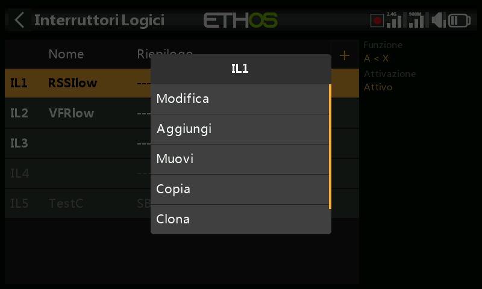
Gli interruttori logici sono interruttori virtuali programmati dall'utente: non sono comandi fisici, ma possono essere usati ovunque sia utilizzabile un interruttore fisico, come innesco di una funzione. Ciascuno valuta la condizione configurata rispetto ai propri ingressi (altri interruttori, valori di telemetria, valori dei mix, valori dei timer, canali gyro/trainer e altro ancora) per diventare Vero o Falso. Ne sono supportati fino a 100; non ne esiste nessuno per impostazione predefinita. Tocca il pulsante + per aggiungerne uno; l'etichetta di menu di un interruttore definito appare verde quando è Vero, rossa quando è Falso. Toccando un interruttore già definito si apre un menu a comparsa che consente di Modifica/Muovi/Copia-incolla/Clona/Cancella.
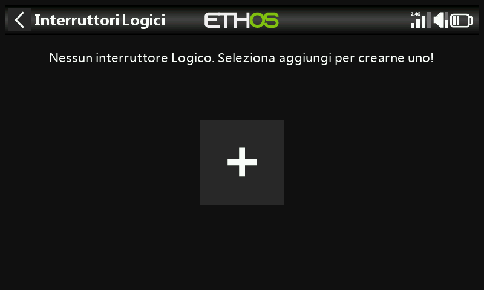
Funzione¶
Ogni funzione supporta un'uscita normale o invertita.
- A ~ X — Vero quando la sorgente
Aè approssimativamente uguale (entro circa il 10%) a un valore fissoX. In genere preferibile all'uguaglianza esatta —
— poiché, con A = X, una lettura di telemetria che oscilla, per esempio,
tra 8,5 V e 8,35 V attorno a un obiettivo di 8,4 V potrebbe semplicemente
non assumere mai esattamente il valore 8,4 V, e quindi l'interruttore non
scatterebbe mai.
- A = X — Vero solo quando A è esattamente uguale a X.
- A > X / A < X — Vero quando A è maggiore/minore di X.
- |A| > X / |A| < X — come sopra, ma confrontando il valore assoluto
di A (segno ignorato).
- Δ > X — Vero quando la variazione di A (delta) nell'arco del
Controllo intervallo raggiunge almeno X. Un intervallo pari a ---
indica una finestra temporale infinita.
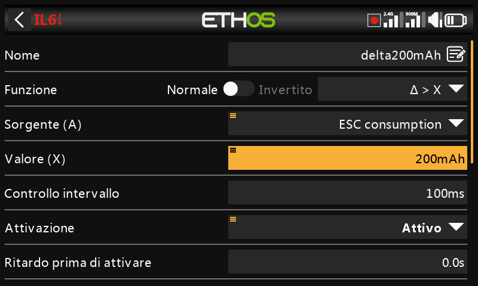
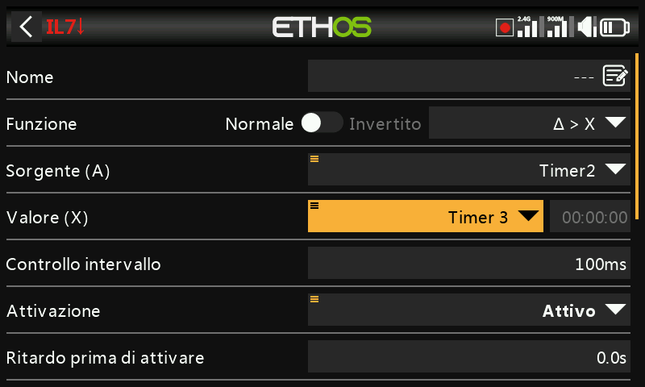
- |Δ| > X — come sopra, utilizzando il valore assoluto della variazione.
- Intervallo — la condizione è Vera se il valore della sorgente
selezionata
Arientra nell'intervallo specificato.
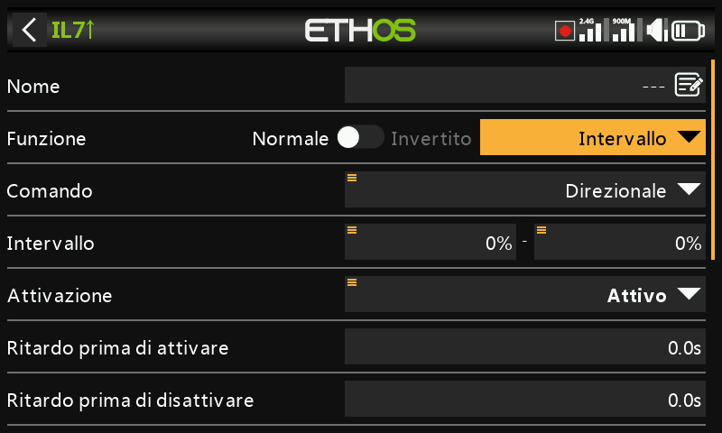
- AND — la condizione è Vera solo se tutte le fonti elencate (Valore 1…Valore n) sono vere.
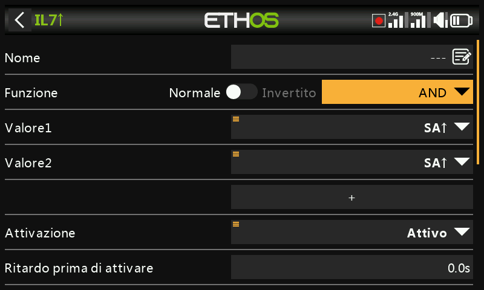
- OR — la condizione è Vera se almeno una delle fonti elencate è vera.
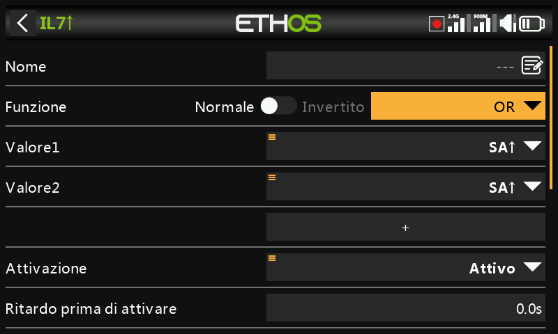
- XOR (OR esclusivo) — la condizione è Vera se è vera solo una delle fonti elencate.
- Generatore di timer — l'interruttore logico si accende e si spegne continuamente: si accende per il tempo Durata attiva e si spegne per il tempo Durata inattiva.
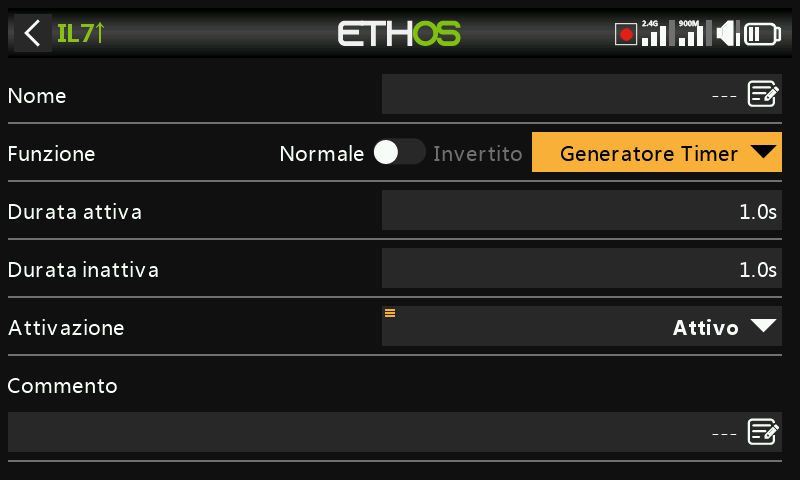
- Sticky — una funzione di blocco (Flip-flop SR); vedere più avanti.
- Edge — un impulso momentaneo; vedere più avanti.
Sticky¶
Si blocca su Vero quando viene soddisfatta la Condizione Trigger ON e mantiene il suo valore finché non viene soddisfatta la Condizione Trigger OFF — il tutto controllato, facoltativamente, dal parametro Condizione attiva (finché questa è Falsa, anche l'uscita viene mantenuta su Falso; la funzione Sticky continua però a funzionare in background e la sua condizione di blocco viene nuovamente commutata all'uscita non appena la condizione attiva torna Vera, soggetta a eventuali ritardi).
Dalla versione Ethos 1.6.2 entrambi i trigger accettano l'opzione Edge
(premere a lungo ENT sulla condizione di trigger, quindi selezionare Edge —
indicata dal prefisso †), che consente un controllo molto più fine:
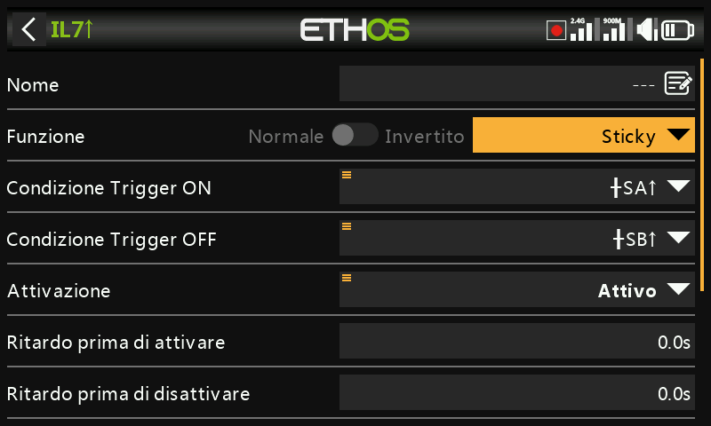
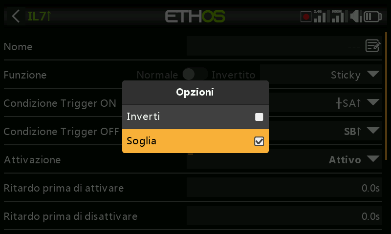
- Trigger ON
SA(nessun ritardo) — l'uscita Sticky passa da Falso a Vero non appena SA diventa alto. - Trigger ON
SA(ritardo = 1 s) — l'uscita Sticky passa da Falso a Vero 1 secondo dopo che SA è diventato alto, a condizione che SA rimanga alto durante questo ritardo. - Trigger ON
†SA(ritardo = 1 s) — l'uscita Sticky passa da Vero a Falso 1 secondo dopo che SA è diventato alto, anche se SA non rimane alto durante questo ritardo (il fronte si è già verificato; il ritardo si limita a temporizzare l'esito).
La Condizione Trigger OFF si comporta allo stesso modo, in senso inverso. I ritardi vengono applicati DOPO la condizione attiva: ciò significa che se la condizione attiva cambia, i periodi di ritardo verranno applicati prima che la condizione di Sticky venga nuovamente commutata sull'uscita. Commutando contemporaneamente entrambi gli ingressi delle condizioni di trigger da Falso a Vero, l'uscita di Sticky cambierà stato una volta. Fare riferimento anche ai Parametri condivisi più avanti.
Edge¶
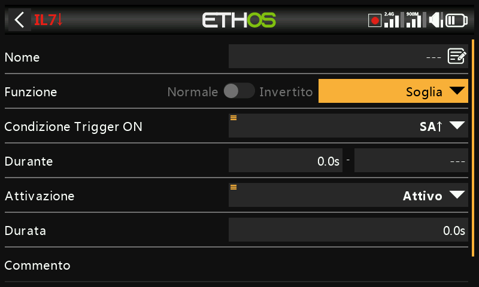
Un interruttore momentaneo: diventa Vero per il periodo specificato in
Durata quando le condizioni di attivazione del Edge sono soddisfatte.
Durante è diviso in due parti [t1:t2] che ne determinano esattamente il
momento:
- Fronte di salita, Durante = 0.0s — l'interruttore logico diventa Vero nell'istante in cui la Condizione Trigger ON passa da Falso a Vero.
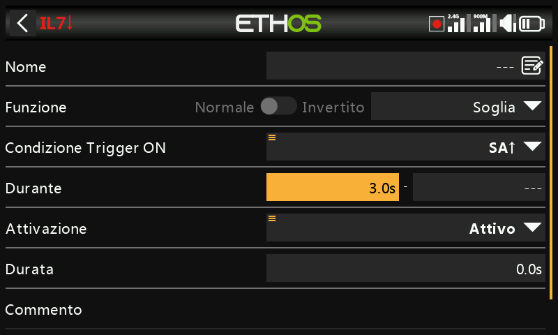
- Fronte di salita, Durante ≥ 0.0s (ad es. 5.0s) — l'interruttore logico diventa Vero 5 secondi dopo che la Condizione Trigger ON è passata a Vero; qualsiasi altro "picco" più breve durante il periodo t1 viene ignorato.
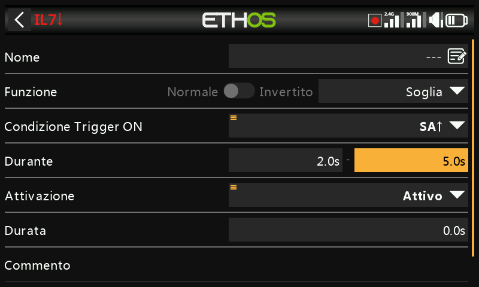
- Fronte di caduta, Durante = 0.0s — l'interruttore logico diventa Vero nell'istante in cui la Condizione Trigger ON passa da Vero a Falso.
- Fronte di caduta, Durante ≥ 0.0s (ad es. 3.0s) — l'interruttore logico diventa Vero al passaggio da Vero a Falso, ma solo dopo essere stato Vero per almeno 3 secondi.
- Impulso (t1 e t2 entrambi impostati) — l'interruttore logico diventa Vero solo se la Condizione Trigger ON compie la sequenza Falso→Vero→Falso all'interno di quella finestra (ad esempio dopo almeno 2 secondi ma non oltre 5 secondi).
Parametri condivisi¶
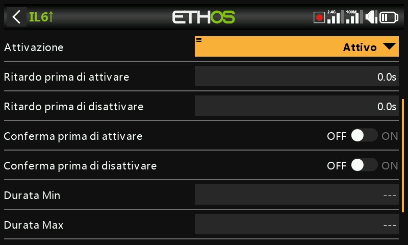
- Condizione attiva — regola l'uscita dell'interruttore nello stesso modo descritto sopra per Sticky. Può essere selezionata tra: Sempre acceso, Posizioni degli interruttori, Interruttori di funzione, Interruttori logici, Posizioni di Trim, Telemetria, Modalità di volo oppure un evento di sistema (Mantenimento del Gas, Taglio del Gas, Gas attivo, Telemetria attiva, RSSI basso, Trainer attivo, Azzeramento del volo).
- Ritardo prima di attivare / Ritardo prima di disattivare — determinano per quanto tempo le condizioni dell'interruttore logico devono essere vere (o false) prima che l'uscita le segua; i ritardi possono arrivare fino a 60.0s. Non sono rilevanti per il generatore di timer e il Edge. (Vedere Guida pratica: avviso di capacità della batteria per un ritardo usato per filtrare una caduta di tensione.)
- Conferma prima di attivare / disattivare — quando l'interruttore logico rileva un cambiamento di stato, questa opzione richiede la conferma dell'utente prima che lo stato cambi (esiste un'opzione di cancellazione per le situazioni in cui il menu di conferma viene attivato troppo frequentemente) — comodo prima di iniziare qualcosa di pericoloso, ad esempio per avere una conferma prima dello spegnimento a distanza di un veicolo terrestre.
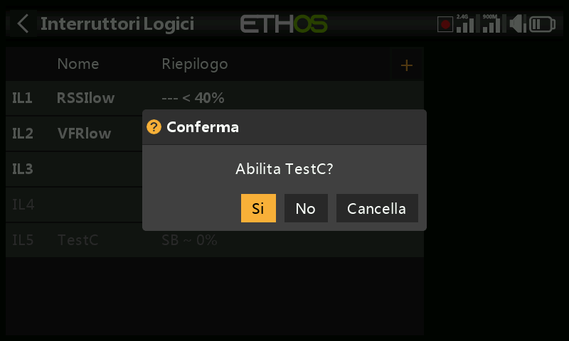
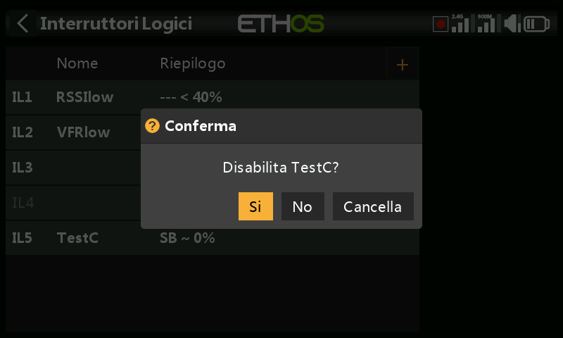
- Durata Min — una volta che l'interruttore logico diventa Vero, rimarrà
Vero per almeno la durata minima specificata. Se si lascia il valore
predefinito
---, l'interruttore diventerà Vero solo per un ciclo di elaborazione del mix, troppo breve anche solo per vedere la riga diventare in grassetto nell'interfaccia. - Durata Max — una volta che l'interruttore logico diventa Vero, torna automaticamente Falso dopo la durata massima specificata, se impostata. Entrambe le durate possono arrivare fino a 60.0s.
- Commento — testo libero, che viene visualizzato quando questo interruttore logico viene aggiunto a un widget di valori, per documentarne l'utilizzo o la funzione.
Da utilizzare con la telemetria¶
L'evento di sistema Telemetria attiva (oppure un interruttore la cui fonte è un sensore di telemetria, attivo solo mentre tale sensore fornisce dati) copre le condizioni del tipo "la telemetria è attualmente ricevuta".
Warning
Quando in un mix viene utilizzato un interruttore logico che
utilizza la telemetria, è necessario aggiungere una seconda azione di
mix che utilizzi lo stesso interruttore logico invertito, per
garantire che il mix abbia valori validi anche in caso di perdita della
telemetria: ricordate che quando un mix è inattivo l'uscita del canale
sarà neutra (0% / 1500 µs, ovvero a metà accelerazione se si trova su
un canale dell'acceleratore). In alternativa è possibile utilizzare
un'azione Offset, che ha già due valori predefiniti distinti, uno per
quando l'azione è attiva e uno per quando è inattiva — ad esempio con la
sorgente impostata sul valore speciale 0 e l'offset regolato in modo
che l'uscita del mix sia +100% quando LS3 è attivo e −100% quando è
inattivo, coprendo entrambi i casi con un'unica azione.
Confronto tra le fonti¶
Normalmente la sorgente viene confrontata con un valore fisso, ma è possibile confrontare direttamente due sorgenti dello stesso formato (cioè con le stesse unità di misura) — ad esempio due timer, due tensioni o due sorgenti RPM.
Opzione per ignorare l'input del trainer dallo slave¶
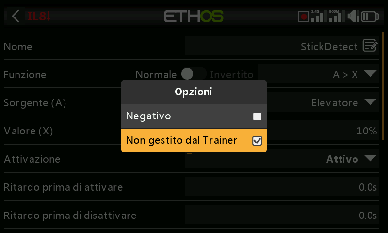
Le opzioni di una sorgente permettono di ignorare qualsiasi sorgente proveniente dall'ingresso del trainer slave (cioè dell'allievo). Un'applicazione tipica è quella in cui un interruttore logico è configurato per rilevare il movimento degli stick del master (ad esempio per consentire un intervento immediato se le cose vanno male), evitando che anche gli ingressi degli stick dell'allievo lo facciano scattare. Viene utilizzato in genere insieme a un interruttore di addestramento per disabilitare/abilitare la condizione attiva nella funzione di addestramento master.